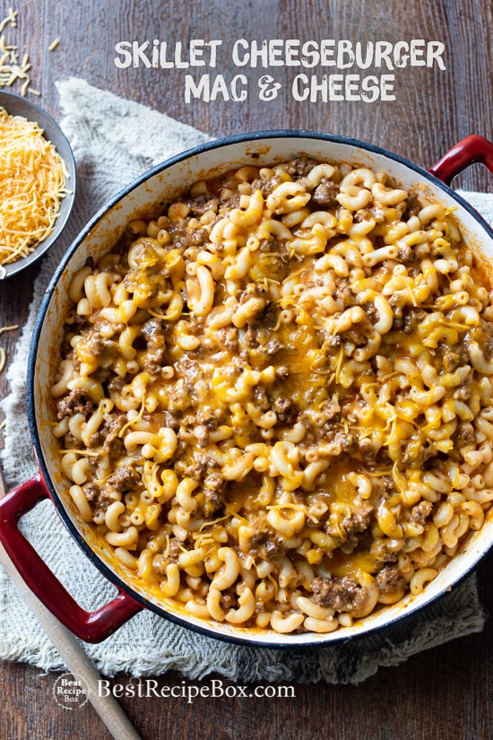

Macaroni and Cheese with Ground Beef

Description
Macaroni and Cheese with Ground Beef, otherwise known as Cheeseburger Mac & Cheese, is a delicious meal anyone can make. Just collect these ingredients and follow these simple steps to have your own delicious dinner.
Ingredients
- 1 pound macaroni
- 1 teaspoon olive oil
- 1 pound ground beef
- 1 medium onion
- 3-4 clove garlic
- 15 ounces tomato sauce
- 1 cup milk
- 1 teaspoon salt
- fresh cracked black pepper
- 1 teaspoon sugar
- 2-3 cups shredded cheddar cheese
- minced parsley for topping
Cooking Instructions
- Cook macaroni to package instructions, drain, then set aside.
- Heat large skillet on medium-high heat. Add oil and then add beef. Break up beef and cook until nearly cooked through, about 3 minutes. Then add onions and garlic and cook until onions and garlic are softened, about 2 minutes. Drain any excess fat if needed.
- Add tomato sauce, milk, salt, pepper, and sugar. Bring beef to a low simmer for about 3 minutes for all the flavors to combine. Taste the beef sauce and add any additional seasonings if needed.
- Fold in the pasta and then add the cheese a little at a time until everything combines and cheese melts. Add additional cheese on top if you want and minced parsley. Serve warm.